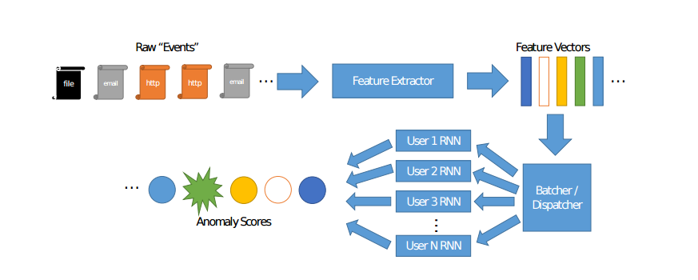

Aggregate Multivariate Autoencoders¶
dnn_agg¶
usage: dnn_agg [-h] [-learnrate LEARNRATE] [-numlayers NUMLAYERS]
[-hiddensize HIDDENSIZE] [-mb MB] [-act ACT] [-norm NORM]
[-keep_prob KEEP_PROB] [-debug] [-dist DIST]
[-maxbadcount MAXBADCOUNT] [-embedding_ratio EMBEDDING_RATIO]
[-min_embed MIN_EMBED] [-max_embed MAX_EMBED]
[-verbose VERBOSE] [-variance_floor VARIANCE_FLOOR]
[-initrange INITRANGE] [-decay_rate DECAY_RATE]
[-decay_steps DECAY_STEPS] [-alpha ALPHA] [-input_norm]
[-refresh_ratio REFRESH_RATIO] [-ratio RATIO [RATIO ...]]
[-pool_size POOL_SIZE] [-random_seed RANDOM_SEED] [-replay]
[-delimiter DELIMITER] [-skipheader]
datafile results_folder dataspecs
- Positional arguments:
datafile The csv data file for our unsupervised training.fields: day, user, redcount, [count1, count2, …., count408] results_folder The folder to print results to. dataspecs Filename of json file with specification of feature indices. - Options:
-learnrate=0.001 Step size for gradient descent. -numlayers=3 Number of hidden layers. -hiddensize=20 Number of hidden units in hidden layers. -mb=256 The mini batch size for stochastic gradient descent. -act=tanh May be “tanh” or “relu” -norm=none Can be “layer”, “batch”, or “none” -keep_prob Percent of nodes to keep for dropout layers. -debug=False Use this flag to print feed dictionary contents and dimensions. -dist=diag “diag” or “ident”. Describes whether to model multivariate guassian with identity, or arbitrary diagonal covariance matrix. -maxbadcount=20 Threshold for early stopping. -embedding_ratio=0.75 For determining size of embeddings for categorical features. -min_embed=2 Minimum size for embeddings of categorical features. -max_embed=1000 Maximum size for embeddings of categorical features. -verbose=0 1 to print full loss contributors. -variance_floor=0.01 Parameter for diagonal MVN learning. -initrange=1.0 For weight initialization. -decay_rate=1.0 Exponential learn rate decay for gradient descent. -decay_steps=20 Number of updates to perform learn rate decay -alpha=0.99 Parameter for exponential moving average and variance -input_norm=False Use this flag for online normalization -refresh_ratio=0.5 The proportion of the new mini-batch to use in refreshing the pool. -ratio=[1, 1] (tuple) (x, y): Number of new batches of data points x and number of old data points y. -pool_size=9000 The scale of the pool. -random_seed For reproducible results -replay=False Use this flag for replay learning -delimiter= Delimiter for input text file. You should be using ‘ ‘ for the dayshuffled cert. -skipheader=False Whether or not to skip first line of input file.
lstm_agg¶
Cert Aggregate Feature LSTM.
usage: lstm_agg [-h] [-num_steps NUM_STEPS] [-learnrate LEARNRATE]
[-initrange INITRANGE] [-numlayers NUMLAYERS]
[-hiddensize HIDDENSIZE] [-verbose VERBOSE] [-mb MB]
[-embedding_ratio EMBEDDING_RATIO]
[-min_embedding MIN_EMBEDDING] [-max_embedding MAX_EMBEDDING]
[-use_next_time_step USE_NEXT_TIME_STEP] [-act ACT]
[-dist DIST] [-variance_floor VARIANCE_FLOOR] [-norm NORM]
[-keep_prob KEEP_PROB] [-debug] [-random_seed RANDOM_SEED]
[-replay_ratio REPLAY_RATIO [REPLAY_RATIO ...]]
[-delimiter DELIMITER] [-maxbadcount MAXBADCOUNT] [-residual]
[-skipheader] [-alpha ALPHA] [-input_norm]
datafile results_folder dataspecs
- Positional arguments:
datafile Path to data file. results_folder Folder where to write losses. dataspecs Name of json file with specs for splitting data. - Options:
-num_steps=5 Number of time steps for truncated backpropagation. -learnrate=0.01 Step size for gradient descent. -initrange=0.0001 For initialization of weights. -numlayers=3 Number of hidden layers -hiddensize=3 Number of hidden nodes per layer -verbose=1 Level to print training progress and/or other details. -mb=21 The max number of events in the structured mini_batch. -embedding_ratio=0.5 Embedding_ratio * num_classes = embedding size. -min_embedding=5 Minimum embedding size. -max_embedding=500 Maximum embedding size. -use_next_time_step=0 Whether to predict next time step or autoencode. -act=relu A string denoting the activation function. -dist=diag A string denoting the multivariate normal type for prediction. -variance_floor=0.1 Float to derive variance floor. -norm “layer” for layer normalization. Default is None. -keep_prob Percent of nodes to keep for dropout layers. -debug=False Use this flag to print feed dictionary contents and dimensions. -random_seed=5 Random seed for reproducible experiments. -replay_ratio=(1, 0) Undocumented -delimiter= Delimiter for input text file. You should be using ‘ ‘ for the dayshuffled cert. -maxbadcount=100 For stopping training when loss does not improve. -residual=False Flag for calculating residual (difference between sequential actions) instead of next action -skipheader=False Whether or not to skip first line of input file. -alpha=0.99 Parameter for exponential moving average and variance -input_norm=False Use this flag for online normalization